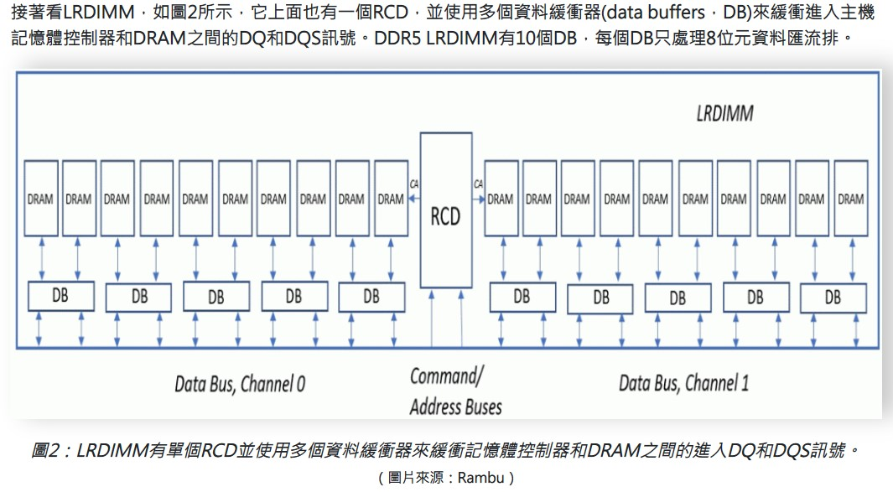

閱讀 R730XD owner manual 淺析伺服器記憶體
Contents
這篇筆記紀錄閱讀 Dell R730XD owners manual 記憶體 (memory) 學到的東西，藉此還債。
▲ 主修資工腦袋空空
科普資源
在開始讀 owner manual 之前，有幾個關於 DIMM (Double In-line Memory Module) 的科普資源，建議先看。
1) 硬件茶談-为什么装机内存条推荐安装到第24槽而不是13槽？为什么ITX主板超频内存更容易？
【硬件科普】为什么装机内存条推荐安装到第24槽而不是13槽？为什么ITX主板超频内存更容易？
以精美動畫講解 motherboard 上 DIMM socket layout type 的差異。
2) OSSLAB-如何正確挑選伺服器記憶體達到最佳效能，不同時脈、容量、廠牌可混插嗎?
如何正確挑選伺服器記憶體達到最佳效能，不同時脈、容量、廠牌可混插嗎?
熊大帶你了解 server 使用的 DIMM 有哪些種類，在效能上分別有哪些差異。
3) 電腦王-圖解RAM結構與原理，系統記憶體的Channel、Chip與Bank
圖解RAM結構與原理，系統記憶體的Channel、Chip與Bank
介紹 DIMM 階層關係。
開始閱讀 owners manual 吧!
Dell R730XD owners manual - System memory，或者手動展開: Installing and removing system componets > System memory
系統記憶體運作頻率 支援 1866 MT/s, 2133 MT/s, or 2400 MT/s 這取決於:
- DIMM type (RDIMM or LRDIMM)，不管是 RDIMM 或者 LRDIMM 都能跑到 2400 MT/s 才對，取決於 DIMM 本身的頻率。另外系統不接受 RDIMM/LRDIMM 混插
- Number of DIMMs populated per channel，一個通道插了幾支 DIMM 會直接影響整個系統 memory 運作的最高時脈! 待會後面會有表，這也是為什麼通常我們的 server 記憶體不會插滿 (
其實是沒錢) 不過要小心插錯/亂插 的情況 - System profile selected，系統效能選擇 (eg: Performance Optimized, Custom, or Dense Configuration Optimized)
- CPU 本身支援的 memory 最高時脈。 以 E5-2687WV4 來說可以支援 DDR4 1600/1866/2133/2400
Memory sockets location
▲ 這張主機板總共有 12+12 sockets，每個 CPU 有 4 channels => 3 DIMMs per channel
每個 channel 插槽的順序分別以 白色、黑色、綠色 標示，而且可以發現 白色插槽永遠是每個 channel 離 CPU 最遠的那一個，同時也是最優先安裝 (populated)、最推薦、干擾最小 的插槽 (合理推測 layout 是拉到中間後往左右延伸的 T-type)
▲ Table 35. Memory channels
Memory population rule
▲ 我們先從 RDIMM population rule 看起，可以看到 當我們把每個 channel 插好插滿時，記憶體時脈只能以最低時脈運作
最後一個欄位的 “Maximum DIMM Rank per Channel” 的 Rank 是什麼呢?
A memory rank is a set of DRAM chips connected to the same chip select, which are therefore accessed simultaneously
來源: digikey - Document #AN0033 – DRAM Memory Module Rank Calculation Whitepaper
▲ rank 就是由好幾個 DRAM chip 組合而成~ 上圖是 single rank 的情況
▲ 實際從倉庫抓一條 RDIMM 來看，1R 代表 one rank，x8 則代表每個 chip 內總共有 8 個 bank (硬件茶談、電腦王 都有介紹 bank 是什麼，可以想像成一個 DRAM chip 內總共有幾層樓)
The x4 and x8 refer to the number of banks on the memory component or chip.
實際上 “Maximum DIMM Rank per Channel” 的意思不是 「每一個 channel 最多只能有幾個 rank 」而是只能插 1R/2R 規格的 DIMM (以 RDIMM 舉例)
▲ LRDIMM 插滿三條最高時脈就比 RDIMM 來的高，也能吃到 x8 的 DIMM (畢竟也是這樣才能有更高的單條容量)
General memory module installation guidelines
- x4 and x8 規格的 DIMM 可以混插，更多詳細資訊請洽 Mode-specific guidelines section
- 安裝 DIMM 的優先順序: 白色、黑色、綠色
- 當混插不同容量的 DIMM 時，大的優先安裝
Mode-specific guidelines
Dell R730XD 總共有四個模式可以在 BIOS 內供使用者選擇。
Advanced Error Correction Code (Advanced ECC mode)
這個模式提升了 DIMM 的容錯，做法有點類似將兩個 channel 合併，開啟時必須符合以下規定
- DIMM 必須是相同容量、時脈、其它技術，且成對 (pair)
- 每個 channel 的第三個 socket 沒辦法被使用 (開機時 POST 會報錯)，裝了 A1 就必須裝 A2，裝了 A3 就必須裝 A4 … 以此類推
Memory optimized independent channel mode
(用不太到，manual 上面的解釋也不多，Google 到的也…) 我暫時把它當作可以支援總容量為 3GB, 6GB,12GB 這種特殊 (不同容量混插?) 容量的特殊模式好了…
This mode supports Single Device Data Correction (SDDC) only for memory modules that use x4 device width. It does not impose any specific slot population requirements.
▲ R730XD owners manual 就只有寫這樣…
In this mode, the MCHs run independently of each other; for example, one can be idle, one can be performing a write operation, and the other can be preparing for a read operation. Memory may be installed in one, two, or three channels. To fully realize the performance benefit of the memory optimized mode, all three channels per CPU should be populated. This implies that some ‘atypical’ memory configurations, such as 3GB, 6GB, or 12GB, will yield the best performance. This is the recommended mode unless specific RAS features are needed.
▲ Google 到的
ref: Should I use bios “Advanced ECC” in Dell PowerEdge R710 Bios with ECC DIMMs?
Memory sparing
這個模式下，每個 channel 會保留一個 rank 當作備援，當其它運作中的 rank 被偵測到錯誤發生時 (ECC 做動)，該 rank 的 data 會被搬到這個 spare rank，發生錯誤的 rank 同時也會被 disable。
當開啟此模式，OS (或者 hypervisor) 看到的可用記憶體空間 (available memory) 將會減少 one rank per channel 的容量!
Memory mirroring
這個模式提供最強的可靠性，簡單講就是將 DIMM 做 RAID1 啦~ 相對的 memory capability 會直接減半
為什麼插 LRDIMM 可以有比較高的記憶體總容量 Why LRDIMM have better capacity than RDIMM
▲ 當時我看到 memory spec 針對不同 type 的 DIMM 居然有不同的支援最高容量非常訝異! 經過爬文之後查得以下原因:
LRDIMM 在 rank 輸出 data 之前加了一個 DB (data buffer)，也因此可以乘載更高的 rank 數，成就單支 DIMM 高容量的場景。

LRDIMMs use memory buffers to consolidate the electrical loads of the ranks on the LRDIMM to a single electrical load, allowing them to have up to eight ranks on a single DIMM module.
ref: dasher.com - Server Memory: RDIMM vs LRDIMM and When to Use Them
其它參考資料
Author
LastMod 2022-06-09 (654fe08)